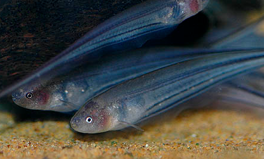

Systématique
- Ordre : Gymnotiformes
- Famille : Sternopygidae
- Genre : Eigenmannia
- Espèce : E. virescens
- Auteur : Valenciennes, 1836

Eigenmannia virescens est un poisson sud-américain appartenant à l'ordre des Gymnotiformes. Communément appelé poisson-couteau de verre, il possède un corps extrêmement allongé et comprimé latéralement, se terminant par une queue fine en forme de fouet. Sa particularité physique majeure est sa transparence quasi-totale, laissant apparaître sa colonne vertébrale et sa vessie natatoire.
Il peut atteindre une taille de 25 à 35 cm. Contrairement à la majorité des poissons, il est dépourvu de nageoires dorsale et pelvienne. Sa propulsion est assurée exclusivement par une longue nageoire anale qui ondule sur presque toute la longueur du corps, lui permettant de nager avec autant d'aisance vers l'avant que vers l'arrière. La coloration générale est gris-bleuté ou verdâtre translucide, marquée par deux ou trois lignes longitudinales sombres.
Eigenmannia virescens est une espèce grégaire et paisible, bien que légèrement territoriale envers ses semblables s'ils manquent d'espace. C'est un poisson nocturne qui utilise un organe électrogène pour s'orienter et communiquer dans l'obscurité. Il émet des décharges électriques de faible intensité à haute fréquence, créant un champ électrique autour de son corps.
En aquarium, il est timide et nécessite un éclairage tamisé ou de nombreuses cachettes (tubes, racines, plantes denses). Bien qu'il soit pacifique avec les autres espèces de taille similaire, sa peau est fragile et sensible aux traitements médicamenteux à base de cuivre ou de vert de malachite. Il doit être maintenu en groupe de 5 individus au minimum pour stabiliser les interactions sociales régies par leurs signaux électriques.
Mode : ovipare, sans soins parentaux.
La reproduction en captivité est rare mais documentée. Elle est généralement déclenchée par une simulation de la saison des pluies (baisses de conductivité et de température suivies de remontées). Le mâle courtise la femelle par des impulsions électriques spécifiques.
La ponte a lieu généralement la nuit parmi les racines flottantes ou les plantes à feuilles fines. Les œufs sont adhésifs. L'éclosion intervient après environ 3 à 4 jours. Les alevins sont difficiles à nourrir au début, nécessitant des infusoires puis des nauplies d'artémias une fois leur sac vitellin résorbé.
Dimorphisme sexuel : peu marqué visuellement. À taille adulte, le mâle est généralement plus grand que la femelle. La distinction la plus fiable se fait par l'analyse des signaux électriques (fréquence plus basse chez le mâle) ou par l'observation des individus lors du frai.
Espérance de vie : environ 5 à 10 ans en aquarium.
L'espèce est largement distribuée dans les bassins de l'Amazone, de l'Orénoque et du Rio de la Plata. Elle fréquente les zones d'eaux calmes, les bras morts de rivières et les zones inondées riches en végétation et en débris végétaux. On la trouve souvent dissimulée parmi les racines des arbres immergés ou dans les herbiers denses durant la journée.
Répartition

Origine naturelle :
- Amérique du Sud : Brésil, Argentine, Paraguay, Uruguay, Venezuela, Colombie, Pérou, Guyanes.
- Localité type : Amérique du Sud (Général).
Paramètres de maintenance
Température : 22 à 28 °C.
pH : 6,0 à 7,5 (Eau neutre à légèrement acide).
GH : 5 à 15 °dGH.
Courant : faible à modéré.
Volume conseillé : minimum 250 à 300 litres pour un petit groupe.
Régime alimentaire
Régime : carnivore insectivore.
En aquarium, il peut être difficile à acclimater aux nourritures sèches. Il préfère nettement les proies vivantes ou congelées (vers de vase, artémias, mysis, petites crevettes). Il est important de distribuer la nourriture le soir ou dans des zones sombres du bac pour respecter son rythme nycthéméral.